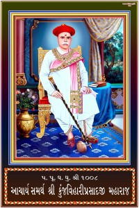

P. P. D. D. 1008 Aadi Aacharya Shree Ayodhyaprasadji Maharaj Shree

- Janma Tithi
- Samvat 1865, Jeth Sud 11
- Gadi Abhishek Tithi
- Samvat 1882, Kartik Sud 11
- Aksharvaas Tithi
- Samvat 1924, Faagan Sud 7
P. P. D. D. 1008 Aacharya Shree Keshavprasadji Maharaj Shree

- Janma Tithi
- Samvat 1891, Chaitra Vad 4
- Gadi Abhishek Tithi
- Samvat 1924, Faagan Sud 7
- Aksharvaas Tithi
- Samvat 1946, Chaitra Vad 4
P. P. D. D. 1008 Aacharya Shree Purushottamprasadji Maharaj Shree

- Janma Tithi
- Samvat 1926, Maha Vad 2
- Gadi Abhishek Tithi
- Samvat 1946, Chaitra Vad 4
- Aksharvaas Tithi
- Samvat 1958, Kartik Vad 30
P. P. D. D. 1008 Aacharya Samarth Shree Kunjvihariprasadji Maharaj Shree

- Janma Tithi
- Samvat 1933, Faagan Vad 10
- Gadi Abhishek Tithi
- Samvat 1958, Maagasar Sud 4
- Aksharvaas Tithi
- Samvat 2008, Maha Sud 3
P. P. D. D. 1008 Aacharya Shree Rajendraprasadji Maharaj Shree

- Janma Tithi
- Samvat 1975, Aaso Sud 2
- Gadi Abhishek Tithi
- Samvat 1999, Vaishakh Sud 6
- Aksharvaas Tithi
- Samvat 2071, Kartik Vad 11
P. P. D. D. 1008 Aacharya Shree Virendraprasadji Maharaj Shree
- Janma Tithi
- Samvat 1998, Aaso Vad 2
- Gadi Abhishek Tithi
- Samvat 2037, Maha Sud 5
- Aksharvaas Tithi
- Samvat 2052, Chaitra Sud 3
P. P. D. D. 1008 Vidhyamaan Aacharya Shree Madhvendraprasadji Maharaj Shree

- Janma Tithi
- Samvat 2035, Shraavan Sud 2
- Gadi Abhishek Tithi
- Samvat 2052, Chaitra Vad 2
P. P. 108 Baallalji Shree Hridayendraprasadji Maharaj Shree
- Janma Tithi
- Samvat 2065, Shraavan Vad 8